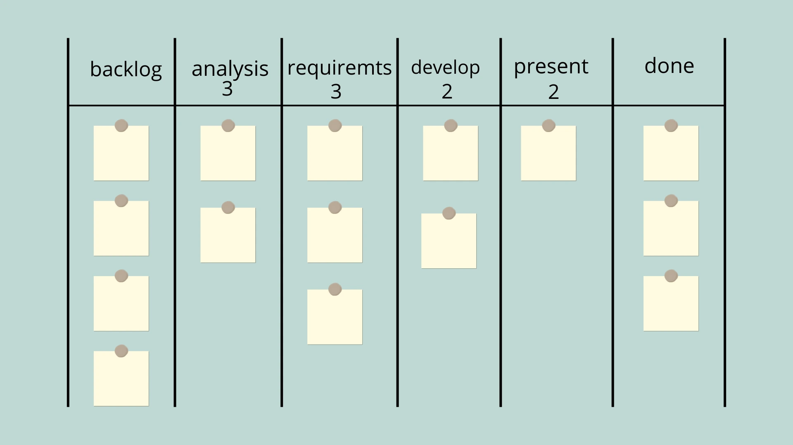

The Kanban Method
Kanban is a method of management and continuous improvement of knowledge (or creative) work that acts in an evolutionary and experimental way - without implementing pre-fabricated models or exaggerated changes, which cause more stress than results -, taking into account the customer's perspective on the delivery of products and services.
The East Gardens of the Imperial Palace
David Anderson, the creator of the method, talks in his book “Kanban: Evolutionary Success for Your Technology Business” about the East Gardens at the Imperial Palace in Tokyo. There is no entrance fee, but each visitor receives a card, which is returned upon leaving the premises.
At first glance, it may not seem like a good idea to have a card, since entry is free. However, there is a finite number of them, exactly the same as the number of people inside the venue. In other words, when there are no more cards available, it means that the Gardens have reached their maximum capacity, and new entrants must wait.
This measure is taken so that the place does not become too crowded - after all, people visit to see the Gardens, not crowds -, as well as to be able to maintain cleanliness and safety.
The word “kanban” in Japanese means card or sign, just like the entrance cards for the East Gardens.
Pull vs Push systems
Similarly, the Kanban method works for companies. When a demand enters the workflow, it receives a card. The number of these cards reflects the number of demands already committed.
Therefore, it is easy to see how many demands are being worked on and whether there is still capacity to accept others at that time. In other words, the team “pulls” demands according to their capacity, instead of them being pushed into the flow without any criteria, causing congestion and future delays.
Operational benefits
Work preview
One of the purposes of the method is to generate a clear picture of how work flows in the company and its services. By knowing the stages of the process and its capacity, and the rules for progressing demands, it is possible to manage and reduce bottlenecks, mitigating risks and continuously improving deliveries.
Risk identification
Com essa visualização, também fica fácil identificar riscos: se temos um congestionamento ou problema no fluxo, sabemos que as demandas das etapas anteriores podem ser impactadas, o que ajuda a antecipar a busca por soluções.
Agility in response
Thus, the company gains in adaptability, being able to correct its processes and evolve quickly, improving what is really necessary, without needing to implement a pre-established model.
How Kanban works
The method works according to six general practices:
Visualize
It is impossible to manage what you cannot see, and often, especially when it comes to knowledge work, what needs to be done becomes invisible. Kanban suggests creating a visual representation of workflows, demands, capacity, rules and metrics. This makes it clear to everyone what needs to be done.
Limit work in progress
When we have a lot of things to do, it's common to feel overwhelmed and even paralyzed. Limiting work in progress (or WiP) is a way to prioritize what's already being done and avoid changing focus between different tasks, which causes wasted time. Think, for example, that you're putting together a spreadsheet that would normally be delivered in an hour. If you're interrupted to do other things, every time you go back to the spreadsheet you'll have to remember where you were and your train of thought, in addition to getting back to your efficient flow. Without a doubt (and without taking into account the interruptions), it will take you longer than the one hour initially planned.

Manage flow
By simply viewing the demands in the flow and respecting a capacity limit, we are already managing the work, as we can see which stages are most congested and not change the focus too much. However, it is also important to collect data that will be valuable for improving the work, such as the agreed deadline and the amount of time remaining until it, the number of demands in each stage, the time for each delivery to occur, the amount of demand delivered in a given period of time, the amount of time each demand is in the flow, among many others.
Make policies explicit
How often does your team need to ask questions to make a decision? How are employees expected to take action when the rules are not clear? Explicit policies make things more transparent, give autonomy over decisions and create organization.
Implement feedback loops
Here we are not talking about that "1:1" conversation between manager and employee. Such meetings are held with the entire team, where the focus is to review the work done, understand what can be improved and make agreements to do so, always in collaboration between management and team. At this point, it is important to look at the picture, analyze the metrics, listen to the problems and opinions so that we can seek to evolve into something that will generate value, and not just a change.
Improve Collaboratively, Evolve Experimentally
Even though managers, at least in theory, have more experience than other employees, two heads are better than one. Furthermore, teams end up knowing more about the operation because they are in daily contact with it, depending on the flows and rules and, therefore, knowing better what is working or not from the perspective of carrying out the work.
Look for small, significant improvements that won't cause problems if they fail. If something isn't working, gather information and try to change something. If it doesn't work, go back and try another way, instead of trying to solve the world all at once. Small improvements generate less stress and more learning.
Kanban for teams and organizations
Kanban is often associated with teams, particularly in managing workflow and relieving overwhelm. Teams can use Kanban to regain control over their tasks, ensuring they don't get overwhelmed and are working on the right priorities at the right time. This can help them increase productivity and reduce stress.
However, Kanban gains momentum when applied on a larger scale. Using the method across a service line and for project and portfolio management can significantly increase an organization's efficiency. Kanban becomes an organizational development tool, enabling departments and teams to work together more effectively while maintaining a customer-centric approach.
Kanban goals
Kanban is also a non-prescriptive method because it does not intend to lead organizations to a predefined model or format, nor to prescribe pre-made solutions. Instead, Kanban aims to:
Alignment between teams and departments: With a service-focused approach, multiple teams or departments can work in harmony, sharing the same goals and reducing silos.
Improved service delivery: As work becomes more agile across multiple teams, companies can deliver better and faster results to their customers.
Continuous improvement: Kanban encourages ongoing evaluation and refinement of workflows, leading to long-term improvements in efficiency, quality, and customer satisfaction.
Conclusion
Kanban is more than just a tool for managing tasks — it's a strategic approach to improving your company's operations, customer service, and adaptability. By visualizing workflows, managing risk, and driving continuous improvement, Kanban equips your company to thrive in an ever-evolving marketplace.